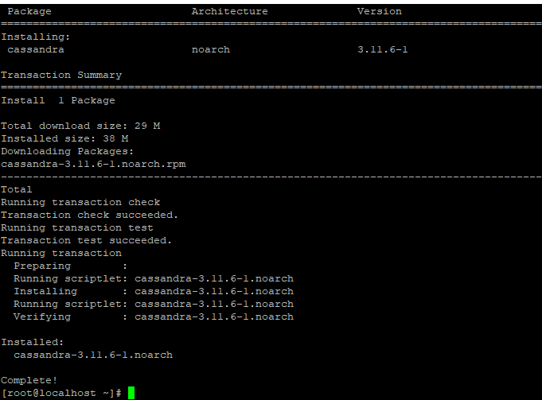

[CentOS] Linux環境(CentOS)でCassandra(NoSQL DB)をインストールする方法(DBeaverブラウザでNoSQL使い方)
こんにちは。明月です。
この投稿はLinux環境(CentOS)でCassandra(NoSQL DB)をインストールする方法(DBeaverブラウザでNoSQL使い方)に関する説明です。
プログラムを作成すると主に使うデータベースはRDBMS(関係型データベース)だと思います。RDBMSだというと何のデータベースと思われますが、オラクルやMS sql server, mysql, MariaDB, Postgresなどのデータベースの意味です。
このRDBMSは多い利点があります、インストールがしやすいし、クエリ検索も早いし、管理もしやすいし、等々のすごく良い利点がありますが、欠点は拡張性とデータ量に対する性能があります。
最近はサーバの性能は過去に比べて非常によくなりまして、大容量のデータもRDBMSで処理ができるようになりましたが、でも、いつかはデータ量に比べて性能が限界に届きます。軽くにRDBMSは一つのサーバでインストールするのでサーバのハードウェアの容量の限界に届きます。
そのことでRDBMSを拡張すると思えば、そのことが簡単ではありません。クラスタリングするのは一般的に設定することも難しいし、管理することでも簡単ではありません。この欠点を解決するのがNoSQLです。
このNoSQLはRDBMSのデータベースに慣れている方が使うのはすごく不便ですね。Joinもできないし、様々な制約も多いです。
でも、データベース量に対する性能でも問題ないし、拡張性もすごくいいことなので大容量のデータを扱うプロジェクトならNoSQLを使うことも悪くないでしょう。
NoSQLとRDBMSに関する差異と説明は別の投稿で詳細に説明します。
NoSQLもデータベース種類が多いです。この投稿ではapache財団のNoSQLのCassandraをインストールしましょう。
まず、NoSQLをインストールするためにはJava 1.8以上とPython 2.xです。
Javaをインストールする方法に関しては以前の投稿で説明したことがあります。
link - [CentOS] Java インストール
Pythonの場合は3.xがインストールされたらcqlshが実行されません。そのため、2.Xがインストールされなければならないです。
sudo yum -y install python2
私はpython2がもうインストールされています。
これからCassandraをインストールするためにyum repositoryに追加しましょう。
link - https://cassandra.apache.org/download/
vim /etc/yum.repos.d/cassandra.repo
[cassandra]
name=Apache Cassandra
baseurl=https://downloads.apache.org/cassandra/redhat/311x/
gpgcheck=1
repo_gpgcheck=1
gpgkey=https://www.apache.org/dist/cassandra/KEYS
ここでbaseurlにバージョン別で追加することができますが、40xはまだ、alphaバージョンなので311xバージョンでインストールします。(参考にCassandraはバージョン別で使い方が少し違います。)
上のrepoを作成してyumを利用してインストールしましょう。
yum -y install cassandra

インストールが完了しました。多分、インストールすることで10分も掛からないと思います。
参考 - インストールディレクトリ /var/lib/cassandra (もし、後で削除する時にここも一緒に削除しなければならないです。yumだけでは完全に削除ができません。)
そしてCassandraを実行する前に様々な環境設定を修正しなければならないです。
まず、起動する時に設定環境設定です。
vim /etc/systemd/system/cassandra.service
[Unit]
Description=Apache Cassandra
After=network.target
[Service]
PIDFile=/var/run/cassandra/cassandra.pid
User=cassandra
Group=cassandra
ExecStart=/usr/sbin/cassandra -f -p /var/run/cassandra/cassandra.pid
Restart=always
[Install]
WantedBy=multi-user.target
そしてcassandraの環境設定です。
vim /etc/cassandra/conf/cassandra.yaml
ファイルの真ん中ごろにauthenticatorがあります。
現在は認証がパスワード無しで接続が可能になり、すべてのユーザが接続することになっています。
これをPasswordAuthenticatorに修正します。パスワード接続する認証と意味です。
今回は設定はリモート接続を可能にする設定です。
初期設定はlocalhostに設定して、broadcast_rpc_addressがコメントになっています。
この部分のrpc_addressを0.0.0.0に設定してbroadcast_rpc_addressのコメントを解除して1.2.3.4に設定します。
Cassandraの設定は完了しました。Cassandraを起動しましょう。
sudo systemctl daemon-reload
sudo systemctl start cassandra.service
sudo systemctl enable cassandra
systemctl status cassandra.serviceのコマンドでactiveになっているかを確認してnodetool statusで現在にCassandraの状態を確認できます。
ここまで問題なかったらインストールが完了したことです。
これからデータベース(Keyspace)を作成してユーザを追加しましょう。
初期ユーザとパスワードはcassandra//cassandraです。
cqlsh -u cassandra -p cassandra
まず、ユーザを作成します。そしてcassandraのIDを削除します。初期IDがあるとセキュリティで問題になりますね。
-- ユーザ追加、SUPERUSER権限追加
CREATE USER nowonbun WITH PASSWORD 'a12345' SUPERUSER;
-- パスワード変更と権限解除
ALTER USER cassandra WITH PASSWORD 'a12345' NOSUPERUSER;
-- ユーザ削除
DROP USER cassandra
参考に接続中の状態ならユーザを削除できません。それでユーザ生成した後に接続終了して生成したIDでログインした後cassandraユーザを削除します。
これからデータベース(Keyspace)を削除します。NoSQLはデータベース(スキーマ)をKeyspaceと言います。
-- 一つのData Centerを利用(サーバを1台に運用)
CREATE KEYSPACE Test WITH REPLICATION = {'class' : 'SimpleStrategy', 'replication_factor' : 3};
-- 二つ以上のData Centerを利用する場合の設定(サーバを2台以上に運用)
CREATE KEYSPACE Test WITH REPLICATION = {'class' : 'NetworkTopologyStrategy', 'datacenter1' : 1};
一応、テストでインストールすることなのでSimpleStrategyで作成します。
ここまでカサンドラのインストールと設定は終わりました。
これからはQuery browserで接続して使う方法です。
NoSQLを使うことで大変なことの一つが良いQuery browser(クエリ探索機)がないことです。私の場合は以前にはsql developerやA5M2をよく使いまいs田が、このNoSQLのためDBeaverに変わりました。
変わった理由はNoSQLのブラウザ機能を支援することですね。
link - [Tools] Dbeaver(無料Sql queryブラウザツール)
でも、DBeaverを実行するとNosql connectionはありません。ドライバを追加しなければならないです。
私の場合はもう追加されていますが、始めに使う方ならないと思います。DatabaseのメニュータブからDriver Managerでnewを追加しましょう。
Driver Nameは適当に作成して、Class NameとUrl Templateは下記とおりに作成します。
# Class Name
org.apache.cassandra2.cql.jdbc.CassandraDriver
# Url Template
jdbc:cassandra://{host}[:{port}]/{database}
そしてポートは9042で設定します。9042はカサンドラの基本ポートです。
そしてAdd Artifactをクリックしてドライバを設定します。
link - https://mvnrepository.com/artifact/com.github.adejanovski/cassandra-jdbc-wrapper/3.1.0
Driverを追加してConnectionを追加すると我々が追加したCassandraがあります。
そして我々がインストールしたCassandraの情報で設定します。

Tset Connectionを実行しましょう。(Driver Download画面に出るとそのままにインストールしたら良いでしょう。)
そしてテーブルを一つ生成してテストをしましょう。
-- Ketspace設定
use test;
-- テーブル生成
create table test(
idx bigint,
contents text,
primary key(idx)
);
-- データ入力
insert into test.test (idx,contents) values(1, 'hello world');
-- 検索
select * from test.test;
Cassandraが実行していることとブラウザから接続してデータを取得することまでできることが確認できます。
ここまでLinux環境(CentOS)でCassandra(NoSQL DB)をインストールする方法(DBeaverブラウザでNoSQL使い方)に関する説明でした。
ご不明なところや間違いところがあればコメントしてください。
- [CentOS] Redisデータベースをインストールする方法とコマンドを使い方2022/02/14 18:33:07
- [CentOS] Linux環境(CentOS)でCassandra(NoSQL DB)をインストールする方法(DBeaverブラウザでNoSQL使い方)2021/11/12 17:33:58
- [CentOs] ジェンキンス(Jenkins)をインストールする方法2021/10/18 18:28:58
- [Ubuntu] PHPをインストール、Composer設定する方法2019/11/13 07:32:21
- [Ubuntu] テーマ(Arc)を変更する方法(tweak)2019/11/12 07:32:13
- [Ubuntu] Apache2をインストールする方法2019/11/11 07:28:28
- [Ubuntu] 「acquire the dpkg frontend lock」のエラーを解決方法2019/11/10 22:19:34
- [Ubuntu] JavaインストールとEclipseをインストールする方法2019/11/08 07:29:55
- [Ubuntu] MariaDB(Mysql)をインストールする方法2019/11/07 07:50:58
- [Java] 58. EclipseでSpring bootのJPAを設定する方法2022/02/23 18:11:10
- [Java] 57. EclipseでSpring bootを設定する方法2022/02/22 19:04:49
- [Python] Redisデータベースに接続して使い方2022/02/21 18:23:49
- [Java] Redisデータベースを接続して使い方(Jedisライブラリ)2022/02/16 18:13:17
- [C#] Redisのデータベースを接続して使い方2022/02/15 18:46:09
- [CentOS] Redisデータベースをインストールする方法とコマンドを使い方2022/02/14 18:33:07
- [Design pattern] 3-6. ステートパターン(State pattern)2021/11/17 20:04:47
- [Design pattern] 3-5. メメントパターン(Memento pattern)2021/11/16 20:01:36
- [Design pattern] 3-4. イテレータパターン(Iterator pattern)2021/11/15 19:31:28
- [CentOS] Linux環境(CentOS)でCassandra(NoSQL DB)をインストールする方法(DBeaverブラウザでNoSQL使い方)2021/11/12 17:33:58
- [Design pattern] 3-3. コマンドパターン(Command pattern)2021/11/05 17:01:42
- [Window] apache-tomcatでロードバランシング(Load balancing)する方法とセッションクラスタリング（セッション共有）2021/11/05 16:58:45
- [Window] Apacheでmod_jkとmod_proxyの差異、apacheでtomcatのwebsocketのプロキシフォーワードする方法2021/11/05 16:55:05
- [PHP] Apache環境の同じホスト中でPHPとJava(Servlet)を同時に起動、運用する方法2021/11/05 16:52:04
- [C#] 61. ウィンドウフォーム(Window form)でスレッド(Thread)を使い方、クロススレッド問題解決2021/11/04 19:29:51